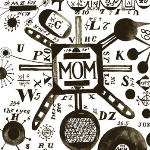

Music Reviews
-
Oberhofer Time Capsules II
Time Capsules II has arrived amidst a relentless touring schedule and increasing furore about their irrepressible leader, Brad Oberhofer, a most blatant talent. Signed to an established label in Glassnote Records (Mumford and Sons, Two Door Cinema Club) and with renowned producer Steve Lillywhite (U2, The Rolling Stones) in tow, they deliver their debut ensemble of American indie-pop and reckless love songs.
Matt Bevington listens with intrigue... -
Burial Kindred
Burial and the Urban Spiritual.
Michael Iovino reviews... -

Nedry In A Dim Light
Nedry seamlessly fuse moody guitars, bassy electronica, and emotive vocals, creating a dark and compelling debut full-length.
Stephen Wragg dims the lights... -
Michael Kiwanuka Home Again
Recently named BBC's "Sound of 2012", the soulful songwriter raises the poll's reputation with a stark, graceful debut that's indebted to both vintage soul and spiritual jazz-folk.
Juan Edgardo Rodríguez is pleased to tell you this tale... -

Cherub MoM & DaD
Inappropriately sexy falsetto synth confections.
George Booker melts with... -

Mouse On Mars Parastrophics
18 years after their first album, and Mouse On Mars are still making electronica of the highest order
David John Wood is enjoying the trip -
Archers of Loaf Vee Vee (Remastered)
Come on, you're reading No Ripcord, are you really telling me that you've never heard of this album? Come on.
James McKenna reviews... -

Scuba Personality
Berlin-based producer Scuba returns with an album that sees a shift away from his characteristically dark electronic music to a brighter place. But does it work?
Gabriel Szatan dives in... -

Fanfarlo Rooms Filled With Light
Baroque-pop rockers Fanfarlo return with their second, 80s-inspired album. Have the London quintet lost the charm that made their 2009 debut so appealing, or have they broken new ground?
David Hogg reviews... -

Julia Holter Ekstasis
Julia Holter emerges from her bedroom studio a second time with an LP of astounding depth and wonder.
Matt Bevington emerses himself within the dream of Ekstasis, the kind you never want to wake up from...